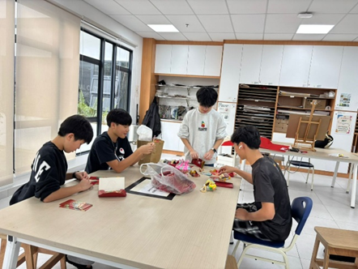
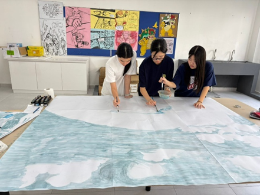

Get to know Cultural Club
Cultural Club provides students with opportunities to explore, appreciate, and celebrate diverse
cultures through hands-on activities, creative projects, traditions, and intercultural communication.
The club encourages students to respect diversity while helping them better understand their own culture
and the cultures of others. Through engaging and interactive activities, students experience cultural
exchange in a fun and supportive environment.
Activity Day, Time, Venue & Advisor
Day: Monday
Time: 3:30 PM – 4:30 PM
Venue: C205
Advisor: Michiko Haga
Objectives
- Promote cultural awareness, respect, and open-mindedness.
- Encourage students to express themselves through cultural and creative activities.
- Build a sense of belonging and global citizenship.
- Develop communication, collaboration, and leadership skills.
- Provide a safe and enjoyable space for cultural exchange.
Suitable Students & Why You Should Join
Cultural Club is suitable for students who are curious about different cultures and traditions and enjoy
learning about the world around them.
It is ideal for students who enjoy creative activities such as crafts, language, music, food, or
cultural celebrations. The club offers a non-competitive and inclusive environment where students can
express themselves and work together with others.
Students who join will broaden their global perspective, make new friends from different backgrounds,
and gain meaningful experiences beyond the classroom while developing empathy and respect for diversity.
What skills will you gain?
- Cultural awareness and global understanding
- Communication and presentation skills
- Creativity and problem-solving abilities
- Teamwork and collaboration
- Confidence and leadership skills
- Respect, empathy, and social responsibility
Activities we do
1. Cultural Crafts and Decoration Projects
Students create crafts and decorations inspired by different cultures and traditions from around the
world.
2. Cultural Festival Celebrations
Members participate in activities related to international celebrations such as Lunar New Year and other
cultural festivals.
3. Language and Cultural Exchange
Students learn simple words, greetings, and customs from different cultures while sharing their own
traditions with others.
4. Collaborative Art and Display Projects
Members work together to create cultural displays, posters, or art projects that showcase different
cultures and ideas.
Photos of previous activities and achievements

